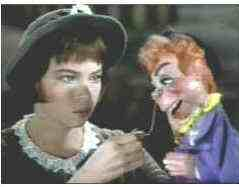
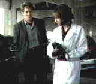
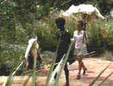
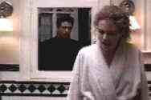

Lili/A-,C
A breath of beautiful MGM musical fairy tale gloss, the
story of Lili is pure elegance and simplicity. A 16-year-old French country girl arrives
in the city in search of a new life after her father’s death leaves her orphaned.
Lili finds a group of carnival players and attaches herself to them, sweetly worming her
way into an act. Leslie Caron is wonderful as Lili, her innocence a perfect contrast for
the bitterness of Mel Ferrer’s Paul. This is a beautiful movie for the whole family. 
Unfortunately, the transfer elements are not good. The
image is not always sharp and the disc suffers from excessive color bleeding. For those of
you with projection televisions, no your set is not out of convergence. Color lacks MGM
musical intensity. The sound is mono and clear. Still, don’t miss Lili. It’s
wondrous entertainment!.
Crash/C+,A
Crash baffled me. I
recognize the allegorical style, and can probably even jump to some conclusions, but I
just don’t understand the vehicle or the route of this material.
Searching for the ultimate thrill or the meaning of life, a
cult forms around the ramifications of automobile crashes and sex. Famous crashes are
replicated(A newer version of this film might have duplicated the Princess Diana crash)and
various sex acts are performed. If you crash enough times there will always be a final
crash.
James Spader, Holly Hunter and Roseanna Arquette all are
participants in David Cronenberg’s film of the J.G. Ballard novel.
A dark film in more ways than one, Crash is given a
luxurious treatment by the Voyager Company at a $49.95 price point. An audio commentary by
David Cronenberg plus extra footage are amongst the extras. Images are very sharp,
dark scenes have significant sparkle. Dolby Surround is powerful and precise. |
Walkabout/B,B
Combine a coming of age tale with an outback desert
adventure and you have an idea what Nicholas Roeg’s 1971 directorial debut is about.
The Australian outback is powerfully recorded and the performances of the children are
quite good. Roeg traverses a minefield of dangerous emotions and social taboos in
Walkabout. There are number of intense scenes that might be difficult for young
children otherwise attracted to a movie about kids surviving against the odds of nature. 
The Voyager Criterion Collection edition has the bonus of a
second audio commentary by director Roeg and star Jenny Argutter. The widescreen aspect is
1.66. There is some excess of grain in the transfer, but images are stable and consistent.
Roeg’s unique camera vocabulary is ably delivered on this laser. The sound is okay.
This laser experience would have benefited greatly from a more aggressive and richer audio
presentation.
Malice/B+,B+
The plotting in this noiresque film is complex
and on first viewing seems to depend excessively on coincidence. That’s not obviously
the case. Malice is a very well constructed screenplay. 
Alec Baldwin, the new hot shot doctor in a Boston college
suburb, rents a room from a young couple. Something suspicious is going on with wife
Nicole Kidman and husband Bill Pullman has to be pushed to the limit before entering into
the three pointed contest.
Directed by Harold Becker is slick style, Malice’s
sharp and bright photography transfers well to laser disc. Blacks are deep and colors well
saturated. The surround sound is effectively aggressive and provides an excellent platform
for the score. |